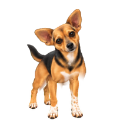

Choose a pose and compare her with the original. This review sets the anatomy and direction of the shake; the in-between frames and full motion come after pose approval.
OriginalDesign reference

3 · Left rollProposed key pose
Her head rolls left; the neck and shoulders carry a smaller twist. Her paws keep their original contact positions.